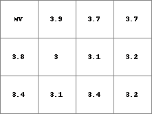
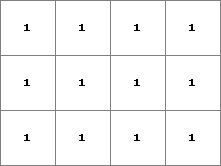
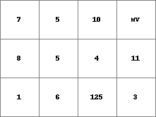

col2map
Converts from column file format to PCRaster map format
col2map [options] columnfile PCRresult
--unittrue or --unitcell
-B, -N, -O, -S, -D and -L
This data type option specifies the type options which is assigned to PCRresult (respectively boolean, nominal, ordinal, scalar, directional, ldd). If the option is not set, PCRresult is assigned the data type of PCRclone or the global clone. The data in columnfile must be in the domain of the data type which is assigned to PCRresult. For description of these domains see the description of the different data types.
if option -D is set; –degrees of –radians
-m nodatavalue
nodatavalue is the value in columnfile which is converted to a missing value on PCRresult. It can be one ascii character (letters, figures, symbols) or a string of ascii characters. For instance: -m -99.89 or -m j5w. Default, if this option is not set, 1e31 is recognized as a missing value.
-s separator
By default, whitespace (one or more tabs, spaces) is recognized as separator between the values of a row in the columnfile. If the values are separated by a different separator, you can specify it with the option. The separator can be one of the ascii characters (always one). In that case, col2map recognizes the specified separator with or without whitespace as separator. For instance, if the values in columnfile are separated by a ; character followed by 5 spaces, specify -s ; in the command line (you do not need to specify the whitespace characters).
columnnumbers
Each cell on PCRresult is assigned the cell value on columnfile which has x,y coordinates that define a point in that cell”;” for assignment of values in columnfile which have x,y coordinates at the edges of cells on PCRresult, the following options are used:
--coorcentre, --coorul or --coorlr
Options to specify which value is assigned if two or more values in columnfile are found which all come into the same cell on PCRresult:
-a, -h, -l, -H, -M, -t
| -a | average value of the values found within the cell is assigned (default for scalar and directional data; for directional data and assignment of records without a direction, see notes) |
| -h | highest score: most occuring value found for the cell is assigned; if two values are found the same (largest) number of times, the highest value of these values is assigned, this is called a majority conflict (default for boolean, nominal, ordinal and ldd data) |
| -l | lowest score: least occurring value found for the cell is assigned (option for nominal, ordinal, boolean, ldd data); if two values are found the same (smallest) number of times, the smallest value of these values is assigned, this is called a minority conflict. |
| -H | highest value found for the cell is assigned (option for scalar or ordinal data) |
| -M | lowest value found for the cell is assigned (option for scalar or ordinal data) |
| -t | total (sum) of the columnfile values is assigned (option for scalar data) |
The columnfile is converted to PCRresult, which is an expression in PCRaster map format with the location attributes of PCRclone. The columnfile must be in the format described in Point data column file format.
For each cell on PCRresult the operator searches in columnfile for records that have x,y co-ordinates that come into that cell on PCRresult. If one single record is found, the value of this record is assigned to the cell, if several records are found, the value which is assigned is specified by the option (-a, -h, -l, -H or -M). A cell on PCRresult without a value on columnfile that falls into the cell is assigned a missing value on PCRresult.
Directional data: If the option -a (average, default) is set, and both records without a direction (value -1) and records with a direction come into a cell (a so called direction conflict), the records without a direction are discarded and the cell value is computed from the records containing a direction only. Thus a cell is assigned a no direction value (value -1) only if all records for that cell don’t have a direction. Using col2map for generating a PCRresult of data type ldd is quite risky: probably it will result in a ldd which is unsound. If you do want to create a PCRresult of data type ldd use the operator lddrepair afterwards. This operator will modify the ldd in such a way that it will be sound, see the operator lddrepair.
This operation belongs to the group of Creation of PCRaster maps
col2map --clone mapclone.map -S -m mv -v 4 ColFile1.txt Result1.map
| ColFile1.txt | Result1.map | mapclone.map |
field data
5
xcoord
ycoord
pH1
pH2
code
25 25 mv 3.4 123
25 35 7.1 3.8 132
25 45 7.5 mv 123
35 25 7.4 3.1 123
35 35 7.7 3.0 321
35 45 7.8 3.9 123
45 25 7.1 3.4 321
45 35 7.4 3.1 213
45 45 7.8 3.7 321
55 25 7.4 3.2 314
55 35 7.1 3.2 141
55 45 7.9 3.7 132
mv mv 7.4 3.2 111
mv mv 7.6 3.1 111
|
 |  |
col2map --clone mapclone.map -O -m mv -x 2 -y 3 -v 6 --coorlr -H ColFile2.txt Result2.map
| ColFile2.txt | Result2.map | mapclone.map |
1 30 20 7.1 3.5 1 1
2 30 30 5.3 3.8 8 0
3 30 40 8.7 3.5 7 1
4 40 20 9.8 3.2 6 0
5 40 30 8.5 3.2 5 1
6 40 40 9.4 3.1 5 0
7 50 20 7.7 3.2 2 0
8 50 30 6.2 2.9 4 0
9 50 40 7.4 3.1 10 1
10 60 20 5.3 3.3 3 1
11 60 30 5.4 3.5 11 1
12 60 40 3.4 3.9 mv 0
13 1200 345 3.4 2.1 121 1
14 45.3 25.8 5.3 3.2 125 1
15 46.2 23.7 5.3 3.2 124 0
|
 |